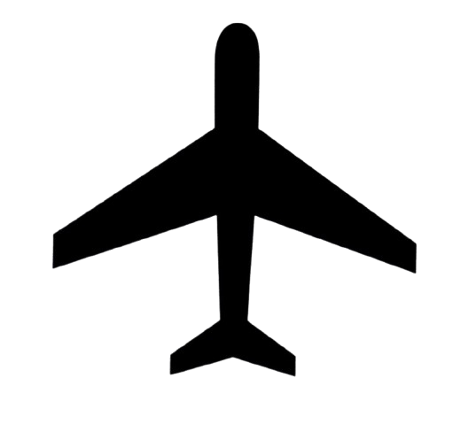

<!DOCTYPE html>
<html lang="en">
<head>
  <meta charset="UTF-8">
  <meta name="viewport" content="width=device-width, initial-scale=1.0">
  <title>Sensor and Aircraft Map</title>
  <link rel="stylesheet" href="https://unpkg.com/leaflet@1.9.4/dist/leaflet.css" />
  <script src="https://unpkg.com/leaflet@1.9.4/dist/leaflet.js"></script>
  <style>
    #map {
      height: 100vh;
      width: 100%;
    }
    .rotated-icon {
      transform-origin: center;
      transition: transform 0.2s ease;
    }
  </style>
</head>
<body>
  <div id="map"></div>

  <script>
    // Initialize the map and set its view to Guadeloupe
    const map = L.map('map').setView([16.265, -61.551], 8.5); // Guadeloupe's coordinates
    L.tileLayer('https://{s}.tile.openstreetmap.org/{z}/{x}/{y}.png', {
      maxZoom: 19,
      attribution: '© OpenStreetMap contributors'
    }).addTo(map);

    const LeafIcon = L.Icon.extend({
      options: {
        iconAnchor: [16, 32], // Center the icon horizontally
        popupAnchor: [0, -32] // Position popup above the marker
      }
    });

    const sensorIcon = new LeafIcon({ iconUrl: 'sealvl_sensor.png', iconSize: [15, 15] }); // Sensor icon
    const aircraftIcon = new LeafIcon({ iconUrl: 'leaf-avion.png', iconSize: [15, 15] }); // Aircraft icon

    async function loadCsvAndAddSensorMarkers() {
      try {
        const response = await fetch('sensors.csv');
        if (!response.ok) {
          throw new Error(`Error fetching CSV: ${response.statusText}`);
        }
        const csvText = await response.text();
        const rows = csvText.trim().split('\n');
        rows.forEach(row => {
          const [Start, Latitude, Longitude, Code, Number, Timestamp] = row.split(';');
          const marker = L.marker([parseFloat(Latitude), parseFloat(Longitude)], { icon: sensorIcon }).addTo(map);
          marker.bindPopup(`
            <strong>Name:</strong> ${Code}<br>
            <strong>Sea level:</strong> ${Number}<br>
            <strong>Last data:</strong> ${Timestamp}
          `);
        });
      } catch (error) {
        console.error('Error loading or parsing sensors CSV:', error);
      }
    }


    async function loadCsvAndAddAircraftMarkers() {
      try {
        const response = await fetch('aircrafts.csv'); // Updated to 'aircrafts.csv'
        if (!response.ok) {
          throw new Error(`Error fetching CSV: ${response.statusText}`);
        }
        const csvText = await response.text();
        const rows = csvText.trim().split('\n');
        rows.forEach(row => {
          const [Status, FlightID, Registration, Latitude, Longitude, Altitude, Speed, AircraftType, Timestamp] = row.split(',');
          console.log(`Parsed Aircraft Data: ${FlightID}, ${Latitude}, ${Longitude}`);
          const angle = parseFloat(Speed); // Assuming Speed is the angle in degrees
          const icon = L.divIcon({
            className: 'rotated-icon',
            html: ``,
            iconSize: [15, 15],
            iconAnchor: [7.5, 15] // Center the icon
          });
          const marker = L.marker([parseFloat(Latitude), parseFloat(Longitude)], { icon: icon }).addTo(map);
          marker.bindPopup(`
            <strong>Flight ID:</strong> ${FlightID}<br>
            <strong>Registration:</strong> ${Registration}<br>
            <strong>Altitude:</strong> ${Altitude} ft<br>
            <strong>Speed:</strong> ${Speed} knots<br>
            <strong>Aircraft Type:</strong> ${AircraftType}<br>
            <strong>Last data:</strong> ${Timestamp}
          `);
        });
      } catch (error) {
        console.error('Error loading or parsing aircraft CSV:', error);
      }
    }
    loadCsvAndAddSensorMarkers();
    loadCsvAndAddAircraftMarkers();
  </script>
</body>
</html>

